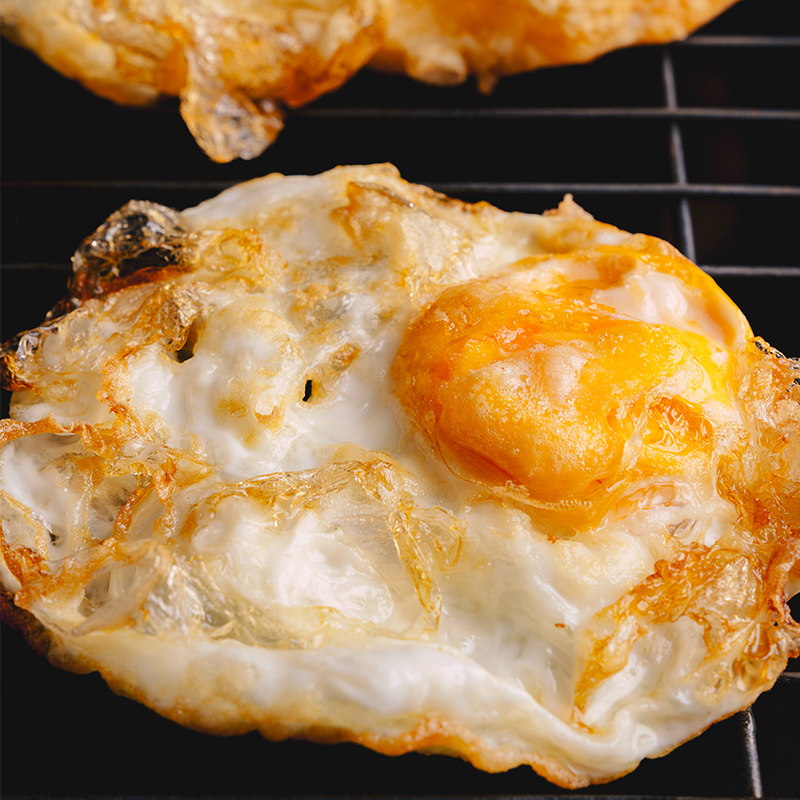

Fried Egg

Description
A simple breakfast to start the day. Fried eggs with toast is the go-to breakfast for our household.
Ingredients
- 1 - Egg
- 2 tsp - Olive oil
- Salt (to taste)
- Black pepper (to taste)
Steps
- Bring a small frying pan to medium heat on stovetop.
- Coat bottom of pan with olive oil.
- Crack egg into pan and let cook until egg whites are solid.
- Flip the egg and cook another half minute.
- Remove from pan and salt and pepper to taste.